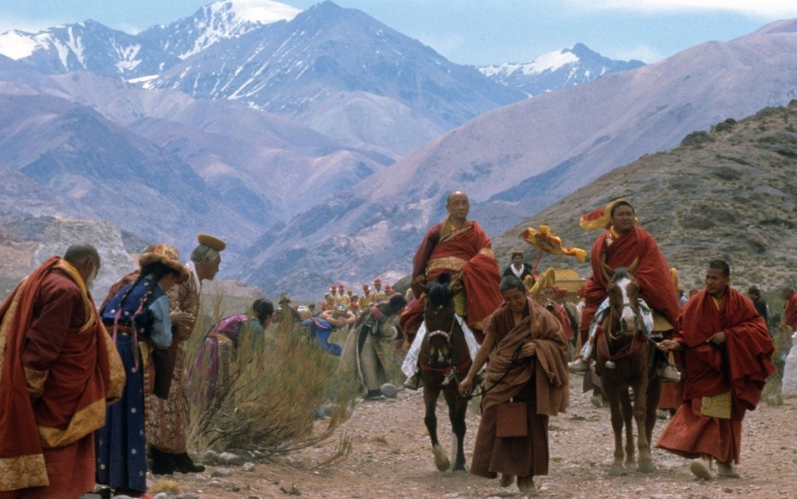
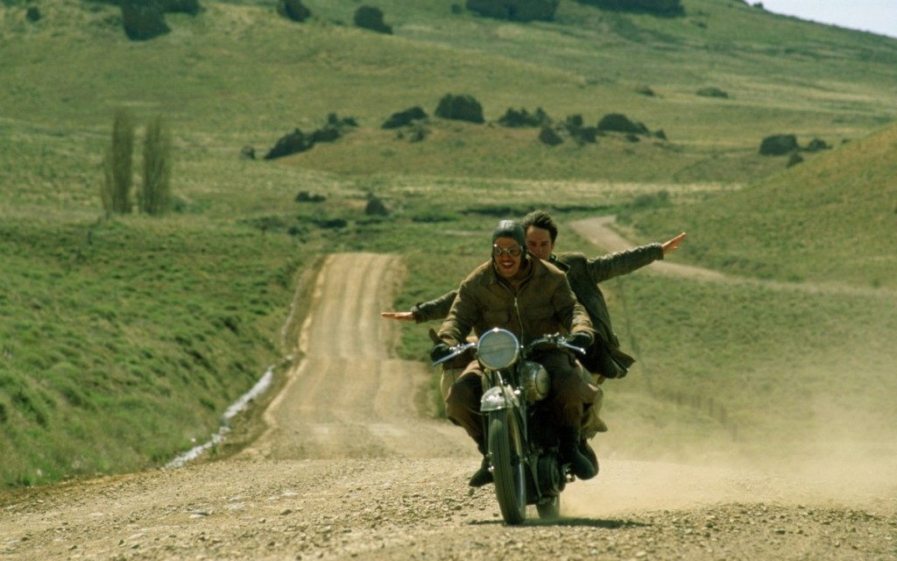
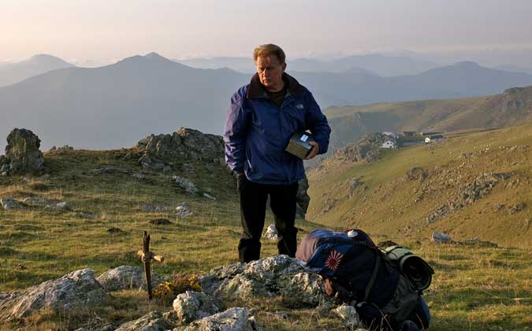
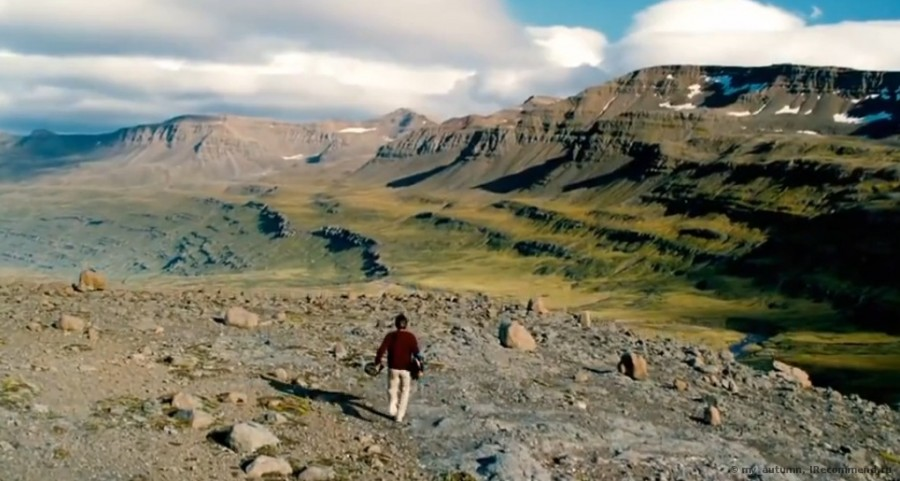
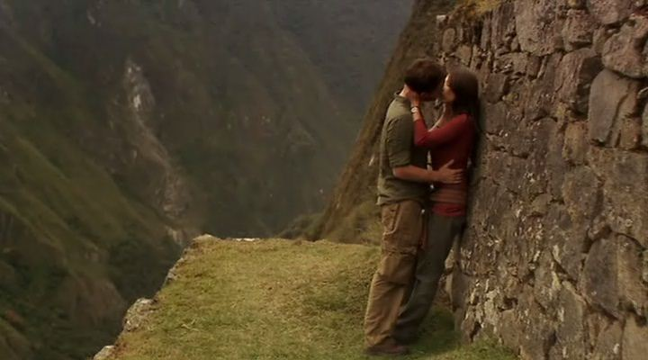
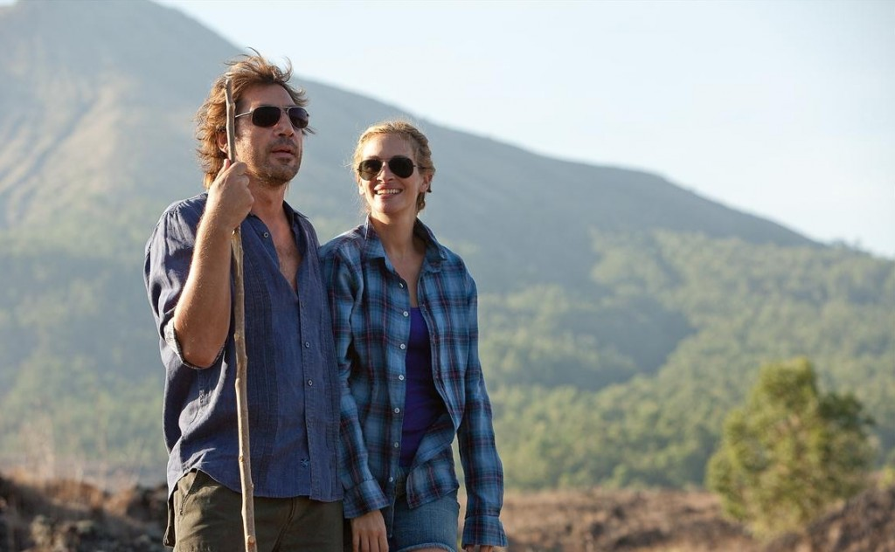
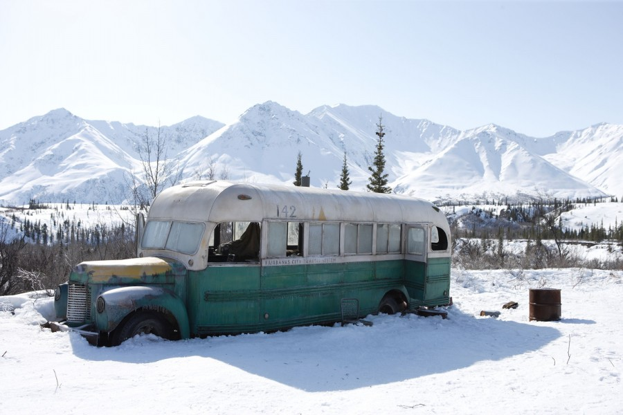
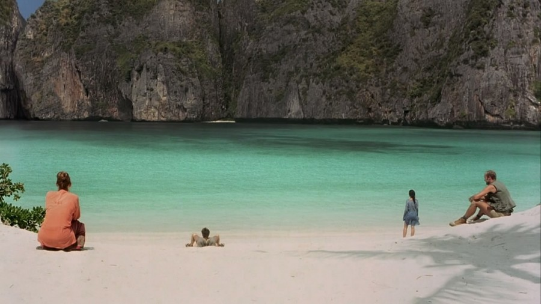
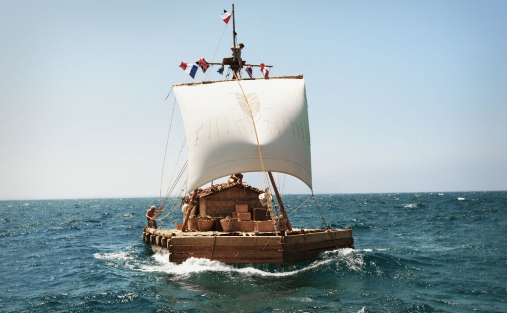

10 ФІЛЬМІВ, ЯКІ НАДИХАЮТЬ ПОДОРОЖУВАТИ

Підбірка фільмів від GOTOTHEGOAL, де Ви зможете почерпнути ідеї для нових подорожей, передбачити небезпеки, які вас можуть чекати в різних ситуаціях, отримати цінні поради, або просто насолодитися різноманітними і чудовими місцями нашої планети. Тут ви обов’язково знайдете близькі до своїх інтересів сюжети, оскільки список включає пригодницькі бойовики, автобіографічні сюжети, драми, трилери, мелодрами, комедії, роуд-муві, і навіть документальні історії. Дивіться фільми і надихайтесь на нові поїздки і мандри.
1. Seven Years in Tibet / Сім років у Тібеті (1997)
уже класний фільм про пригоди молодого, амбіційного австрійського альпініста в Тібеті. Події відбуваються в роки Другої світової війни. Пригодницький фільм, в якому можна побачити процес сходження на саму неприступну вершину Гімалайських гір, полон і втеча з нього, подорож до Тібету (який закритий для іноземців), життя в столиці Лхасі, дружба з Далай Ламою, захоплення Тібету Китаєм, драматичне кохання. Через це все пройшов герой фільма, якого неперевершено зіграв молодий Бред Піт.
В подорожах ви набираєтесь мудрості і усвідомлюєте те, що в повсякденному житті не вдасться.
Картина також показує, як через одного продажного “міністра-засранця” Тібет став частиною Китаю. (Через це в дану країну тепер дуже важко потрапити). Може надихнути:на подорож до Гімалайських гір, поїздку до Тібету, заняття альпінізмом.
2. Diarios de motocicleta / Че Гевара: Щоденники мотоцикліста (2004)
Просто “бомбезний” роуд-муві про подорож на мотоциклі Ернесто Гевари (майбутнього кубинського революціонера, який візьме собі прізвисько Че, щоб підкреслити аргентинське походження) і його друга Альберто Гранадо через всю Південну Америку. Вони подолають більше 8 тисяч кілометрів на мотоциклі через пампаси і Анди. Фільм в першу чергу про дружбу, про життя простих латиноамериканців і про те, як під впливом побаченого у Ернесто Гевари зароджуються основи його революційної ідеології.
Подорожі роблять з людей революціонерів.
Може надихнути: на подорож на мотоциклі, подорож до Латинської Америки.
3. Touching the Void / Торкаючись пустоти (2003)
Це, мабуть найкращий фільм про альпіністів. Він знятий в документальному жанрі по книзі Джо Сімпсона. Сюжет описує реальне сходження Джо і його напарника, на неприступну вершину Сіула Гранде, що в Перуанських Андах, по ще ніким не пройденому маршруті ( по західній стіні гори). Вони збиралися підкорити найскладнішу вершину, але все трапилося не так, як передбачалося. Сходження було важким, спуск виявився трагічним. Так вийшло, що один альпініст помилково вирішив, що його друг загинув і пішов один. Другому зі зламаною ногою довелося кілька днів, долаючи холод, спрагу, біль повзти вниз.
Альпініст з поламаною ногою ставив собі невеличкі цілі на шляху і “повз” до них. Долаючи крок за кроком маленькі відстані людина може пройти будь-який складний шлях.
Може надихнути: на альпінізм і скорення неприступних вершин.
4. The Way / Шлях (2011)
Літній американець Том Ейвері , офтальмолог з Каліфорнії , приїжджає в Сен- Жан- П’є- де- Пор ( Франція ) за тілом свого єдиного і норовливого сина Деніеля, що відправився в паломництво по шляху Святого Якова і загинув під час бурі в Піренеях. Раптово Том вирішує сам пройти пішки весь цей шлях, який має приблизно 800 кілометрів, разом з прахом та спорядженням свого сина. Під час довгої і напруженої подорожі по Іспанії, яка наповнена різними кумедними випадками і халепами, Том знайомиться з безліччю людей і знаходить собі трьох випадкових супутників-пілігримів – Юста з Амстердама , Сару з Канади і письменника Джека з Ірландії. Їх спільна мандрівка, яка переросла у справжню дружбу, закінчується на березі Атлантичного океану, в районі Мухіа . Кожен з них зважився напаломництво по своїх причинах, але по завершенню шляху всі вони придбали щось більше, ніж очікували спочатку.
В подорожі можна знайти друзів. Ключова фраза фільму: Ти не вибираєш життя, ти живеш його.
Може надихнути: на проходження шляху до Сантьяго (Camino de Santiago).
5. The Secret Life of Walter Mitty / Неймовірне життя Уолтера Мітті (2013)
Історія про те, як завдяки подорожам, можна зробити своє життя насиченим пригодами і неймовірно цікавим. Насправді фільм відкриває очі на те, що не потрібно роками сидіти в робочому офісі і лише мріяти про відкриття нових горизонтів, а потрібно наважуватись на вчинки і пригоди, мрії перетворювати на цілі і досягати їх.
В подорожах ви заживете по новому. В подорожах на вас чекають нові пригоди і нові враження.
В подорожах ви заживете по новому. В подорожах на вас чекають нові пригоди і нові враження.
6. The Art of Travel / Мистецтво подорожувати (2008)
Головний герой фільму – Коннор Лейн – круто змінює хід свого життя. Тікає зі свого весілля і несподівано відправляється в подорож по Центральній Америці. В картині ви потрапите в небезпечну Республіку Нікарагуа, своїми очима побачите непрохідні джунглі Дарьєнського пробілу, відвідаєте Колумбію, Панаму, Перу, древнє місто інків Мачу-Пікчу, знамените соляне озеро Уюні, що в Болівії …
Справжній мандрівник не йде протоптаним шляхом, він прокладає собі дорогу самостійно. Мистецтво подорожувати – це вміння спонтанно змінювати плани.
Може надихнути: на подорож по не пройденим маршрутам, на подорож по Південній Америці.
7. Eat Pray Love / Їж, молись, кохай (2010)
Це мелодраматична, надихаюча на подорожі кінострічка, за однойменною автобіографічною книгою Елізабет Гілберт. Цей фільм про жінку (головну роль зіграла Джулія Робертс), яка починає розуміти, що живе зовсім не так, як вона спочатку хотіла. Тому вона прийняла рішення подати на розлучення. Після цього Елізабет вирушає у навколосвітню подорож, завдяки якому вона зможе пізнати себе, а також завести безліч нових знайомств. Після цього фільму стало модно жити в індійських ашрамах, їздити на велосипеді уздовж балійських рисових полів і консультуватися у індонезійських народних цілителів. Балійське арт-поселення Убуд тепер постійно обсідають натовпи фанатів книги і фільму, бажаючі випробувати ті ж враження, що і Елізабет Гілберт.
У подорожах можна пізнати себе і зрозуміти свою власну сутність, а також знайти своє кохання.
Може надихнути: на подорож до Італії, Індії чи острова Балі.
8. Into the Wild / В диких умовах (2007)
Драматичний фільм про тінейджера, який проміняв життя в розвиненому суспільстві на виживання в природному середовищі. Фільм знятий по книзі Джона Кракауера, який роками розкопував цю дивовижну історію. Після закінчення коледжу американський юнак віддав $ 24000 своїх заощаджень на доброчинність, спалив готівкові гроші і відправився подорожувати автостопом по США. Він працював на збиранні врожаїв, сплавлявся на каяку по Великому каньйону, нелегально потрапив до Мексики. Весь цей час юнак готувався до реалізації своєї мрії: дістатися до Аляски і жити далеко від людей і їх цивілізації споживання.
Щоб реалізовувати свої крейзі-ідеї і не робити помилок потрібно добре готуватися до них.
Може надихнути: на життя поза цивілізацією, на подорожі автостопом.
9. The Beach / Пляж (2000)
Картина про самотніх мандрівників, які шукають собі постійно пригоди на п’яту точку. В цьому фільмі разом з чудесним райським островом Пхі-Пхі, що в Тайланді, група туристів знаходить і проблеми на свою голову! Люди на скільки одержимі ідеєю, недоторканого сучасною цивілізацією, райського життя, що готові йти на все, і навіть на вбивства.
Подорожуйте, але не втрачайте голову.
Може надихнути: на подорож до Тайланду.
10. Kon-Tiki / Кон-Тікі / (2012)
Картина про легендарну подорож Тура Хеєрдала на примітивному плоті з Південної Америки до Полінезії тривалістю 8000 кілометрів і 101 день. Гігантські кити, сутички з голодними акулами, грозовий шторм, що роздирає вітер, битва за життя посеред бурхливої стихії …. Героям належить проявити неабияку силу і працьовитість, щоб цей день не став останнім. Це неймовірна подорож назавжди змінить людей, які ризикнули в неї відправитися.
Кожна твоя поставлена мета буде досягнута, якщо в це вірити всім серцем і не зупинятися перед труднощами. Кожна твоя подорож змінює тебе.
Може надихнути: робити те, у що ви вірите всім своїм серцем, попри те, що говорять інші.